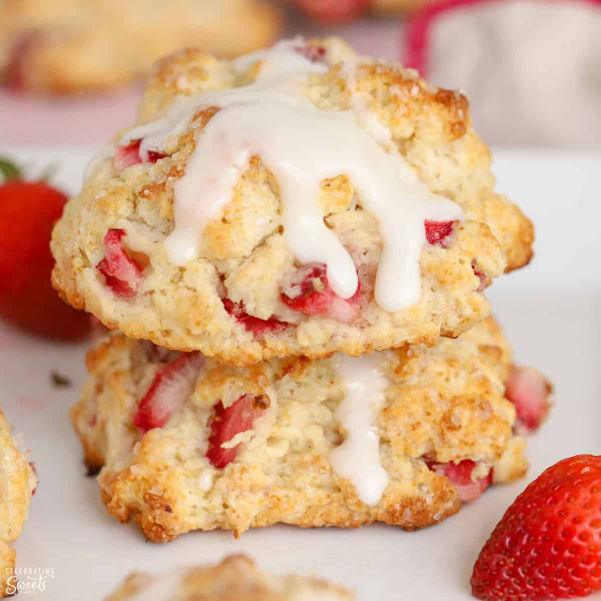

Strawberry Biscuits

Description
Whether they’re plain or bejeweled with pieces of strawberry and rhubarb, “drop biscuits” are the easiest type of biscuits to make — and feature a wonderfully tender, moist texture.
So, what’s the catch? They’re not really biscuits. Or, at least they’re not like the classic, flaky, southern-style biscuits that most of us imagine when we think of biscuits. These are much more scone-like, which isn’t an issue, unless you want an actual biscuit.
Ingredients
Fruit Mixture:
- 1 1/4 cups cubed rhubarb
- 1 1/4 cups cubed strawberries
- 2 tablespoons white sugar
Dough:
2 cups all-purpose flour
2 1/2 teaspoons baking powder
1/2 teaspoon baking soda
1/2 teaspoon fine salt
1/2 cup (1 stick) frozen unsalted butter
1/4 cup white sugar
2 tablespoons reserved fruit syrup
3/4 cup cold buttermilk
Egg Wash (optional):
1 large egg (optional)
2 teaspoons water (optional)
Lemon Icing Drizzle (optional):
1/3 cup packed powdered sugar
1 teaspoon finely grated lemon zest
2 teaspoons lemon juice, plus more as needed
How to Make Strawberry Rhubarb Drop Biscuits
- Cut ribs of rhubarb in half lengthwise and slice into 1/4-inch pieces; place into a bowl. Add cubed strawberries and 2 tablespoons sugar. Toss to combine, cover, and let fruit macerate in the refrigerator for 1 to 2 hours.
- Combine flour, baking powder, baking soda, and salt in a mixing bowl; whisk to combine.
- Drain fruit in a strainer set over a bowl. Reserve the syrupy juices that pass through.
- Grate frozen butter into the flour mixture, while stirring with a fork several times to coat butter pieces with flour. Add 1/4 cup sugar, and drained fruit, mixing with a fork until fruit is coated with flour.
- Add 2 tablespoons of the reserved fruit juices, and pour in buttermilk. Mix with a fork just until the dry ingredients are incorporated into the dough. If the mixture is too dry to come together, add a little more buttermilk. If it seems too wet, and sticky, add a little more flour.
- Preheat the oven to 450 degrees F (230 degrees C). Line a baking sheet with a silpat mat.
- Scoop or spoon equal portions of dough onto the prepared baking sheet. Whisk together egg and water in a small bowl. Brush biscuits with egg wash, and sprinkle with sugar.
- Bake in the preheated oven for about 25 minutes. Transfer to a wire rack and let cool completely.
- Mix powdered sugar, lemon zest, and lemon juice together in a small bowl for the lemon icing. Fill icing into a piping bag or a plastic bag with the tip cut off and drizzle icing over cooled biscuits.